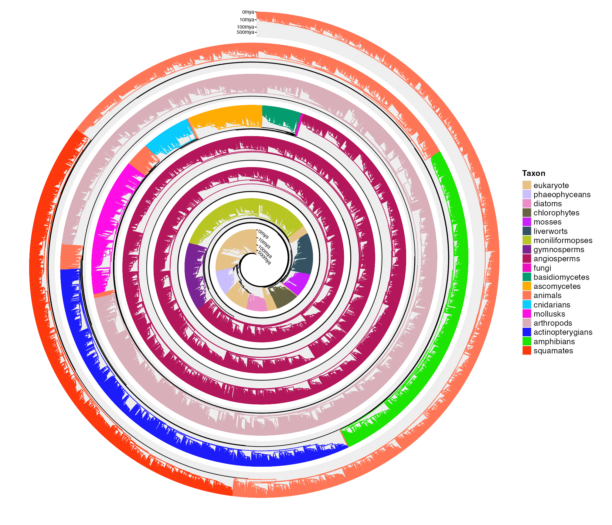

vignettes/tree_of_life.Rmd
tree_of_life.RmdHedges et. al., 2015 visualized a phylogenetic tree of 50455 species with spiral. Here I try to reimplement the plot. All the files used in this vignette are from http://www.biodiversitycenter.org/ttol.
The file 1.TTOL_all_unsmoothed.nwk contains the complete tree.
library(spiralize)
library(ape)
tree = read.tree("~/workspace/spiral/life_of_tree/1.TTOL_all_unsmoothed.nwk")
tree##
## Phylogenetic tree with 50455 tips and 50435 internal nodes.
##
## Tip labels:
## Tangara_desmaresti, Tangara_cyanoventris, Tangara_cyanocephala, Tangara_seledon, Tangara_fastuosa, Tangara_gyrola, ...
##
## Rooted; includes branch lengths.In the study, the tree was colored by taxonomic groups. Unfortunately I can not get such taxonomic information, nevertheless, authors provided phologenetic trees for individual taxa from which we can manually establish the relationship between speices and taxa.
files = scan(textConnection(
"~/workspace/spiral/life_of_tree/10.TTOL_squamates_unsmoothed.nwk
~/workspace/spiral/life_of_tree/11.TTOL_amphibians_unsmoothed.nwk
~/workspace/spiral/life_of_tree/12.TTOL_actinopterygians_unsmoothed.nwk
~/workspace/spiral/life_of_tree/13.TTOL_arthropods_unsmoothed.nwk
~/workspace/spiral/life_of_tree/14.TTOL_mollusks_unsmoothed.nwk
~/workspace/spiral/life_of_tree/15.TTOL_cnidarians_unsmoothed.nwk
~/workspace/spiral/life_of_tree/16.TTOL_ascomycetes_unsmoothed.nwk
~/workspace/spiral/life_of_tree/17.TTOL_basidiomycetes_unsmoothed.nwk
~/workspace/spiral/life_of_tree/18.TTOL_angiosperms_unsmoothed.nwk
~/workspace/spiral/life_of_tree/19.TTOL_gymnosperms_unsmoothed.nwk
~/workspace/spiral/life_of_tree/20.TTOL_moniliformopses_unsmoothed.nwk
~/workspace/spiral/life_of_tree/21.TTOL_liverworts_unsmoothed.nwk
~/workspace/spiral/life_of_tree/22.TTOL_mosses_unsmoothed.nwk
~/workspace/spiral/life_of_tree/23.TTOL_chlorophytes_unsmoothed.nwk
~/workspace/spiral/life_of_tree/24.TTOL_diatoms_unsmoothed.nwk
~/workspace/spiral/life_of_tree/25.TTOL_phaeophyceans_unsmoothed.nwk
~/workspace/spiral/life_of_tree/26.TTOL_eubacteria_unsmoothed.nwk
~/workspace/spiral/life_of_tree/27.TTOL_archaebacteria_unsmoothed.nwk
~/workspace/spiral/life_of_tree/3.TTOL_animals_unsmoothed.nwk
~/workspace/spiral/life_of_tree/4.TTOL_plants_unsmoothed.nwk
~/workspace/spiral/life_of_tree/5.TTOL_fungi_unsmoothed.nwk
~/workspace/spiral/life_of_tree/6.TTOL_birds_unsmoothed.nwk
~/workspace/spiral/life_of_tree/8.TTOL_mammals_unsmoothed.nwk
~/workspace/spiral/life_of_tree/28.TTOL_eukaryote_partition_consensus.nwk
"), what = "character")
lt = lapply(files, function(f) {
tree = read.tree(f)
tree$tip.label
})
len = sapply(lt, length)
taxon_level = gsub("^.*TTOL_([a-z]+)?_.*$", "\\1", basename(files))
library(Polychrome)
taxon_col = createPalette(length(taxon_level), c("#FF0000", "#00FF00", "#0000FF"), range = c(30, 80))
taxon_col = structure(taxon_col, names = taxon_level)
taxon = structure(rep(taxon_level, times = len), names = unlist(lt))The two objects taxon and taxon_col are already saved in the package, so we can directly load them:
lt = readRDS(system.file("extdata", "life_tree.rds", package = "spiralize"))
taxon = lt$taxon
taxon_col = lt$taxon_col
head(taxon)## Pseudoboa_coronata Pseudoboa_nigra Pseudoboa_neuwiedii Boiruna_maculata
## "squamates" "squamates" "squamates" "squamates"
## Drepanoides_anomalus Clelia_clelia
## "squamates" "squamates"Here the variable taxon is a named vector the contains correspondance between taxa and species.
We can just simply use spiral_phylo() to make the plot. I also add the legend for taxa.
spiral_initialize(xlim = c(0, 50455), scale_by = "curve", start = 90, end = 360*7 + 90,
reverse = TRUE, vp_param = list(x = unit(0, "npc"), just = "left"))
spiral_track(height = 0.8, reverse_y = TRUE)
h = spiral_phylo(tree, log = TRUE, group = taxon[ tree$tip.label ], group_col = taxon_col)
at1 = c(0, 10, 100, 500, 2043)
at2 = log10(at1 + 1)/h
spiral_yaxis(at = at2, labels = paste0(at1, "mya"), side = "both") # mya means million years ago
library(ComplexHeatmap)
at = unique(rev(taxon[ tree$tip.label ]))
at = at[!duplicated(at)]
lgd = Legend(title = "Taxon", at = at, legend_gp = gpar(fill = taxon_col[at]))
draw(lgd, x = unit(1, "npc") + unit(4, "mm"), just = "left")